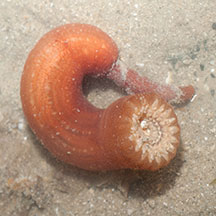
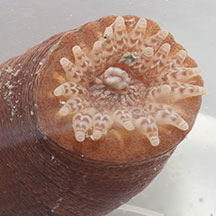
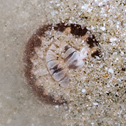

|
|
| sea anemones text index | photo index |
| Phylum Cnidaria > Class Anthozoa > Subclass Zoantharia/Hexacorallia > Order Actiniaria |
| Brown peachia
anemone Synpeachia temasek Family Haloclavidae updated Dec 2024 Where seen? This small anemone with a few fat tentacles that spread out flat is seen on some of our shores, especially in sheltered sandy areas. It is small and usually retracted into the sand at low tide so it may actually be quite common but overlooked. Synpeachia temasek is a new genus and new species described from Singapore! Features: Diameter with tentacles expanded 4-5cm. One ring of 20 tentacles that are thick at the base and tapering at the tips. It has a reddish-brown body column. It is usually seen with its tentacles flat on the surface, spaced out equally so that the anemone resembles a star. The oral disk and tentacles often have V-shaped chevron patterns in shades of white, pink, beige and brown. A structure of 3-5 bumps in the middle of the mouth that sometimes protrudes out of the mouth called a conchula. Sometimes mistaken for White peachia anemone (Metapeachia tropica) which far more common. It looks similar but has a cream-colored body column and 16 tentacles. An 'uprooted' Peachia anemone is often mistaken for a sea cucumber or a worm. Here's more on how to tell apart sausage-like creatures. Status and threats: As at 2024, it is listed as Critically Endangered in Singapore. |
 'Uprooted' anemone. Changi, Jun 13 |
 Bumps in the middle of the mouth. Changi, Aug 12 |
 With tentacles tucked in. Changi, Jun 13 |
| Brown peachia anemones on Singapore shores |
On wildsingapore
flickr
|
| Other sightings on Singapore shores |
References
|